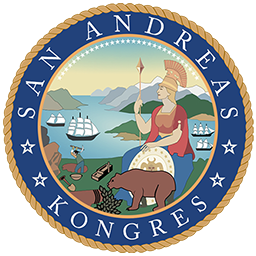

V Kongresu San Andreas, který má pouhých deset členů, zasedá aktuálně šest policistů. To znamená, že policie má nadpoloviční většinu, což jí umožňuje přehlasovat kohokoliv a prosazovat zákony čistě podle svých zájmů. Tento nepoměr je naprosto nepřijatelný a přináší několik zásadních problémů, které mohou poškodit rovnováhu moci ve státě, omezit občanská práva a proměnit Kongres v nástroj policejního vlivu.
1. Policie má zákony vymáhat, ne je tvořit
Každá demokratická společnost stojí na dělbě moci – zákony by měli tvořit různorodí zástupci lidu,
policie by je měla vynucovat a soudy kontrolovat jejich dodržování. Když ale více než polovina
zákonodárců pochází z řad policie, celý systém se hroutí.
Policisté mají přirozenou tendenci chránit své vlastní zájmy – a když ovládají Kongres, mohou si
přizpůsobit zákony tak, aby jim dávaly ještě větší moc a privilegia. Hrozí například:
- Schvalování zákonů, které rozšiřují pravomoci policie a oslabují veřejnou kontrolu.
- Blokování reforem, které by mohly zvýšit odpovědnost policie za její činy.
- Upřednostňování represivních opatření místo spravedlivých a vyvážených řešení.
Kongres má zastupovat celou společnost, ne jen jednu profesní skupinu. Jakmile si zákonodárnou moc přisvojí policie, vzniká nebezpečný střet zájmů.
2. Policie ovládá Kongres – může si dělat, co chce
V momentě, kdy má jedna skupina nadpoloviční většinu, nemusí se už ohlížet na nikoho jiného.
Policisté v Kongresu mají dost hlasů na to, aby přehlasovali každého, kdo by se jim postavil. Jinými
slovy, pokud se rozhodnou schválit něco, co je výhodné jen pro ně, nikdo je nemůže zastavit.
Tohle je zásadní problém, protože:
- Kongres už nefunguje jako demokratická instituce, ale jako prodloužená ruka policie.
- Jakákoli kritika nebo návrh na omezení policejních pravomocí budou automaticky zamítnuty.
- Občané ztrácejí možnost ovlivnit chod státu, protože jejich hlas není v Kongresu zastoupen dostatečně.
Zákony mají vznikat diskuzí a hledáním kompromisů. Pokud si je ale policie může schvalovat sama pro sebe, bez jakéhokoliv dohledu, přestává být Kongres nástrojem spravedlnosti a stává se nástrojem policejní moci.
3. Policie už teď má dost pravomocí – proč by měla mít i kontrolu nad zákony?
Policie už v současnosti disponuje obrovskou mocí. Má právo:
- Používat sílu, včetně smrtících zbraní.
- Zatýkat a vyšetřovat kohokoliv.
- Monitorovat a kontrolovat veřejnost.
To je obrovská zodpovědnost, kterou by měl kontrolovat Kongres – jenže
pokud si policisté Kongres
obsadí, kontrola mizí. Místo toho, aby Kongres byl protiváhou moci, stává se jejím
nástrojem.
Jakmile si policisté mohou sami utvářet zákony, které se jich týkají, mizí jakákoliv nezávislá
kontrola jejich činnosti. To může vést k nebezpečné situaci, kdy:
- Policisté získají neomezené pravomoci, protože si je sami schválí.
- Obyčejní občané budou mít menší možnost se bránit vůči policejní zvůli.
- Jakékoli snahy o reformu policie budou automaticky blokovány.
Když ti, kdo mají vymáhat zákon, začnou zároveň tvořit pravidla podle sebe, otevírá se cesta k absolutní moci bez kontroly.
4. Kde jsou zástupci ostatních profesí?
San Andreas není jen stát policistů. Žijí tu lékaři, učitelé, podnikatelé, dělníci, studenti a
mnoho
dalších lidí, kteří mají své vlastní problémy a zájmy. Pokud v Kongresu
dominuje jedna skupina, znamená
to, že se řeší hlavně její agenda, zatímco ostatní oblasti jsou ignorovány.
Kdo bude bojovat za:
- Lepší zdravotnictví?
- Vzdělání a podporu školství?
- Lepší podmínky pro podnikání a zaměstnance?
Pokud více než polovina Kongresu patří jedné jediné profesi, zbytek společnosti přichází o svůj hlas. To je obrovský problém, protože demokracie funguje jen tehdy, když se na rozhodování podílí různorodé skupiny lidí.
Závěr: Policie nemá mít většinu v Kongresu, protože to ohrožuje demokracii
To, že více než polovina Kongresu jsou policisté, je extrémně nebezpečné. Znamená to, že policie má
zákonodárnou moc, výkonnou moc a částečně i kontrolní moc, což je přímá cesta k policejnímu státu.
Kongres by měl být různorodý a zastupovat všechny občany, ne se stát nástrojem jedné profesní skupiny.
Pokud se situace nezmění, hrozí, že se zákony budou schvalovat hlavně v zájmu policie, zatímco běžní
lidé ztratí možnost ovlivnit, jak se jejich stát řídí.
A to není demokracie. To je základ totality.
Co si o tom myslíte vy? Měl by Kongres San Andreas lépe vyvažovat zastoupení různých profesí, nebo vám nevadí, že v něm dominují policisté? Podělte se o svůj názor!